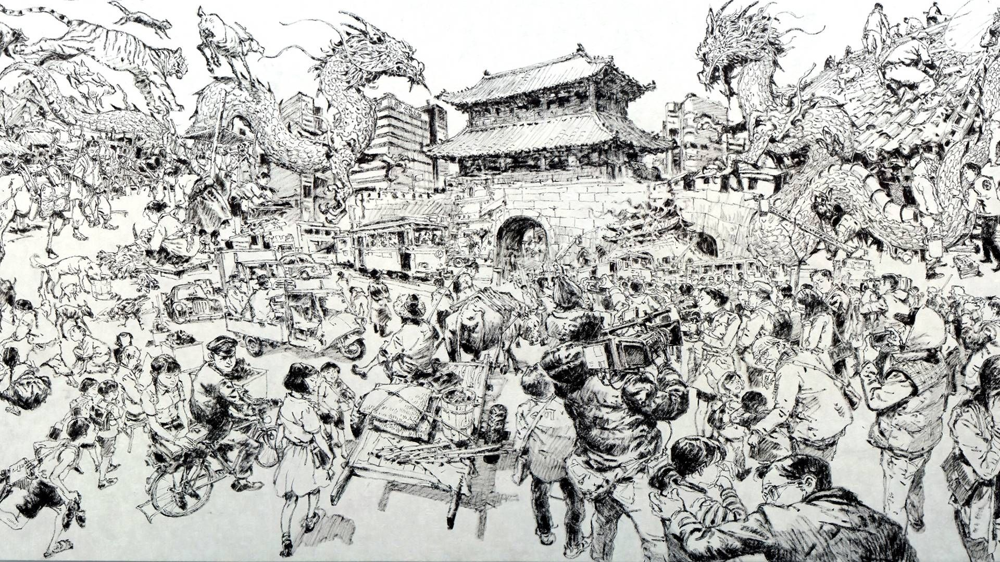
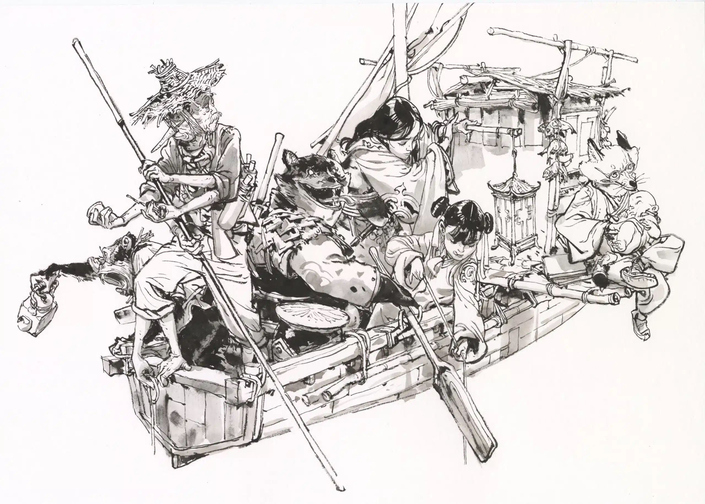
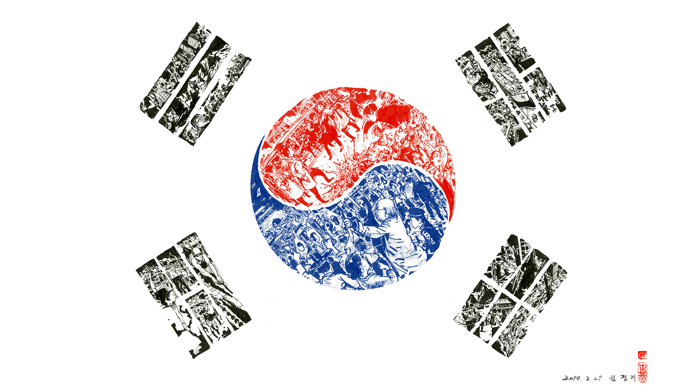

Self-Styled: Kim Jung Gi
A true artist’s artist, Jung Gi possessed a technical prowess and expressiveness to his draftsmanship that placed him at an exalted level amongst the world’s concept art and illustration elite, but the subject matters of his work and the sheer spectacle of watching him create it had wide-reaching appeal that won him fans from all walks of life.
Jung Gi made a regular practice of wowing audiences with his ability to approach a blank wall only to walk away a mere hours later having completely transformed it into a self-contained universe so teeming with detail and complexity you could spend more time looking at it than it took him to draw it.

Jung Gi was a walking encyclopedia of figures, machines, and materials and possessed an understanding of perspective many working artists could only ever hope to aspire to. The way he wielded this knowledge, conjuring characters and scenes with a degree of non-chalantness as if it were no different than breathing was just plain awe-inspiring to watch.
Check out any one of his drawing demonstrations on Youtube and you’ll see for yourself—Kim Jung Gi was the real deal. No rehearsal, no erasing, no gimmicks. Just a man and a brush pen, drawing for hours on end. The scale of his work, and the speed and ease with which he drew was something all audiences could understand, winning him fans all over the world.
The fact that he worked primarily in ink only added to the wonder. How was he doing it? Were his lines premeditated? Were these drawings rehearsed? Well, yes, but only in the sense that Kim Jung Gi simply never put down his pen—a fact evidenced by his online portfolio, which includes several scans of drawings that were done on napkins.

The total volume of his work is hard to imagine. Jung Gi was an incredibly prolific artist and leaves behind a vast visual legacy including seven published collections of his sketches, a collaborative book with the legendary Japanese artist, Katsuya Terada, and a list of features to his name. Jung Gi has also personally left his mark on the thousands of pages of those who were lucky enough to wait in line and meet him in person and receive a unique sketch from the man himself.
Beyond the works drawn by Jung Gi himself, his legacy lives on in other ways as well, namely, in the generations of artists he’s either directly or indirectly inspired through his work. Jung Gi was also very generous with the knowledge he’d gained, spending a significant portion of his time teaching at schools in both South Korea and the US, while sharing translated streams of his lectures online to reach an even broader audience.
